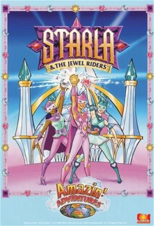

Princess Gwenevere and the Jewel Riders (1995)
FantasyFamilyChildrenAnimationAdventure
| Year | 1995 |
|---|---|
| Rating | TV-Y7 |
| Status | Completed |
| Seasons | 2 |
| Episodes | 26 |
| Genre | Fantasy, Family, Children, Animation, Adventure |
The series takes place after a thousand years passed since Merlin's initial victory over Morgana. Mentored by the ageless Merlin, the Jewel Riders are the young female champions of goodness and magical guardians of New Camelot, who uphold the laws of the peaceful kingdom of Avalon and defend its people for generations. But with Merlin suddenly gone, the current trio of Jewel Riders, aided by their animal friends, get tasked with saving Avalon from evil.
Episodes
Season 1
| # | Title | Air Date | Synopsis |
|---|---|---|---|
| 1 | Jewel Quest: Part 1 | 1995-09-10 | Gwenevere (Starla) is about to follow in the footsteps of her friends Tamara and Fallon as a Jewel Rider: the time has come for her to receive the special Enchanted Jewel, the Sun Stone, in the traditional Friendship Rin |
| 2 | Jewel Quest: Part 2 | 1995-09-17 | Princess Gwenevere and the Jewel Riders, aided by their male counterparts, The Pack, embark on a rescue mission to save Sunstar from Lady Kale's Thornwood Castle. Kale demands the key to the Jewel Box in exchange for the |
| 3 | Song of the Rainbow | 1995-09-24 | Tamara is caught in an enchantment when she plays a beautiful harp given to her for a performance at a craft fair. The music of the harp leads Tamara to Rainbow Falls in the Riverdells where the Rainbow Jewel has returne |
| 4 | Travel Trees Don't Dance | 1995-10-08 | Trying to ride the Wild Magic by themselves for the first time, Gwen and Sunstar get pulled off course and discover that the Travel Trees, which are used to "ride" the Wild Magic, are being affected as well. It has becom |
| 5 | Wizard's Peak | 1995-10-01 | The Jewel Riders and the Pack go on a quest to the Crystal Cliffs to find an ancient mountain called Wizard's Peak and recover the Crown Jewel of Burning Ice. After an ambush by Lady Kale, they separate into two groups; |
| 6 | The Fairy Princess | 1995-10-22 | A faery, named Wisp, Faery King Odeon's daughter, goes after her lost flock of magic sheep. The sheep became affected by the Wild Magic, turning into "biker-sheeps" through a rainbow passage to the Great Deserts of Avalo |
| 7 | For Whom the Bell Trolls | 1995-10-15 | The Pack finds a rhyming entertaining troll in the Misty Moors with the Misty Rose Crown Jewel. The troll uses it to turn the Pack into frogs and their wolves into lizards. Frog Josh escapes and contacts the Jewel Riders |
| 8 | Badlands | 1995-10-29 | Fallon with Moondance just won a race against the Pack when Tamara informs her that the riders are to go with the princess to a party celerbrating a newborn. Fallon did not wish to leave the Pack's training games for the |
| 9 | Home Sweet Heart Stone | 1995-11-05 | Tamara is called by her parents to Heartland Animal Farm to examine a legendary magical animal recently discovered, a Prism Fox. However, Lady Kale hears the news and now she desires the Prism Fox as one of her magic ani |
| 10 | Lovestruck | 1995-11-12 | Drake finds the talking Magic Sword of Garmondale in a tree at a carnival. Hungry for magic from the Enchanted Jewels of the Jewel Riders, the sword promises Drake that women will now fall madly in love with him. With th |
| 11 | Dreamfields | 1995-11-19 | Gwen runs off into the Dreamfields of the Great Plains when she becomes bored with her date with Drake. There, she becomes caught in a battle of dreams with Lady Kale who is also trying to find the Crown Jewel. In a wild |
| 12 | Revenge of the Dark Stone | 1995-11-26 | Just when the Jewel Riders try to find the last Crown Jewel and complete the magic of Merlin’s Jewel Box, Lady Kale disguises herself as Queen Anya and sneaks into the Crystal Palace, where she seizes the Jewel Keep and |
| 13 | Full Circle | 1995-12-03 | With Avalon cast in darkness, the Jewel Riders refuse to give up and return to the Friendship Ring to perform the Circle of Friendship ceremony again. Then with their jewels recharged, they enter the Wild Magic to find M |
Season 2
| # | Title | Air Date | Synopsis |
|---|---|---|---|
| 1 | Meet Morgana | 1996-09-08 | The Jewel Riders learn about the newly enhanced magic of their Enchanted Jewels and of a new quest to find the special Wizard Jewels that can give Merlin back his magical powers and return him home. Meanwhile, in the Wil |
| 2 | Meet Shadowsong | 1996-09-15 | Using maps found in Merlin’s cottage, the Jewel Riders ride the Wild Magic looking for Wizard Jewels. However the Travel Trees cannot handle their new magic and they must travel through the Wild Magic on their own. Tamar |
| 3 | Fashion Fever | 1996-09-22 | It is high fashion and high-jinx as the annual charity fashion show opens at the Crystal Palace fairgrounds. It is Queen Anya’s birthday and King Jared wants to surprise her with a new dress. When he assigns Gwen and Sun |
| 4 | The Wizard of Gardenia | 1996-09-29 | In the magical gardens of Gardenia, a gardener gnome fools the Jewel Riders into thinking that he is one of the Great Wizards from Avalon’s past, and capable of great magic. The gnome has the ability to sculpt magical to |
| 5 | Vale of the Unicorns | 1996-10-06 | The Jewel Riders journey to the enchanted lands of the unicorns to learn about the mysterious secret of their magic. The unicorns, the most magical animals in Avalon, are in danger. The unicorn Queen is missing, kidnappe |
| 6 | Prince of the Forests | 1996-10-13 | While searching for wonderous Faery Wraiths in the Forest of Arden, Princess Gwenevere finds romance and magic with a strange boy named Ian. Hearing Gwen’s cry for help, Ian rescues the Princess from a marsh mire. Howeve |
| 7 | The Wishing Jewel | 1996-10-20 | Gwen and Drake get lost in the misty walls that surround Avalon and discover a new magical but dangerous place outside the borders of the kingdom. Lost, they must work together to unravel a riddle told to them by the Tra |
| 8 | The Jewel of the Sea | 1996-10-27 | A fortune teller named Esmerelda and her mysterious cat use the Fortune Jewel to tell people’s fortunes. When the Jewel Riders have their fortunes read, a dark future is revealed to Gwenevere that tells of the fall of th |
| 9 | Trouble in Elftown | 1996-11-03 | Three mischievous trolls find new Enchanted Jewels in the Wild Magic and to energize it, they steal elf magic from the Elf Woods. The Jewel Riders ride into town and look for a Western-style showdown with the trolls to s |
| 10 | Mystery Island | 1996-11-10 | The Wild Magic gliders tell the Jewel Riders a creature is crying from somewhere in the Wild Magic and Tamara convinces the Jewel Riders to go and rescue it. The girls ride into the Wild Magic and discover a “lost island |
| 11 | The Fortune Jewel | 1996-11-17 | A fortune teller named Esmerelda and her mysterious cat use the Fortune Jewel to tell people’s fortunes. When the Jewel Riders have their fortunes read, a dark future is revealed to Gwenevere that tells of the fall of th |
| 12 | Lady of the Lake | 1996-11-24 | Determined to prevent the prophecy of the Fortune Jewel from coming true, the Jewel Riders travel to the Heart of Avalon to seek out the wisdom of the Lady of the Lake. For this they need the help of the Grandfather Trav |
| 13 | The One Jewel | 1996-12-01 | Princess Gwenevere and the Jewel Riders journey to the center of the Wild Magic, where they confront Morgana for the control of the magic of Avalon. Morgana is trying to forge the Wizard Jewels together and create the On |